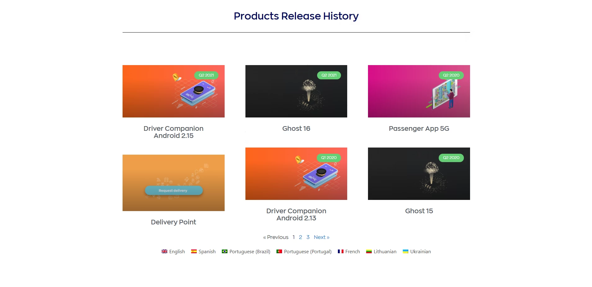
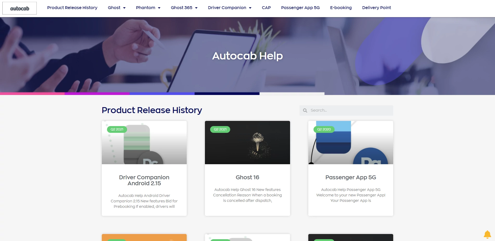

Autocab SaaS
Case Study - Autocab 2020
Autocab is a leading taxi and private hire booking & dispatch software provider, that offers innovative solutions to help businesses go further. I was hired to create and manage documentation for all their products.
Audiences
Overall the audience for this documentation was well-educated, but not necessarily technical. So the aim was to create easy-to-understand online help, without too much technical jargon, but at the same time, ensuring everything a user may need was covered.
Challenges
Autocab's existing documentation offered several challenges and opportunities:
- Documentation was hosted on WordPress with a single static page for release notes
- The WordPress configuration was disorganised
- Overused plugins were conflicting and causing issues
- Documentation didn't adhere to a style guide
- The documentation contained more marketing copy instead of helpful content

Before starting any writing:
- Time was spent working with Autocab's WordPress site and products to understand how they work.
- The product categories were organised and the web of conflicting plugins was untangled.
- A style guide was put in place to maintain a consistent style, voice, and tone across the documentation.
- User personas were defined and used to set the audience for each product's documentation.
The existing documentation was then rewritten to match the style guide and audiences, and new documentation was created to fill in any knowledge gaps for each product.
Outcome
Instead of a static release notes page, users now had an online knowledge base with categories for each product's documentation, and a search feature to find exactly what they're looking for.

Skills: Writing, Editing, Organisation, Communication, WordPress, Information Architecture, HTML, CSS, Theme and plugin installation, Web development, UX/UI, Site architecture,...